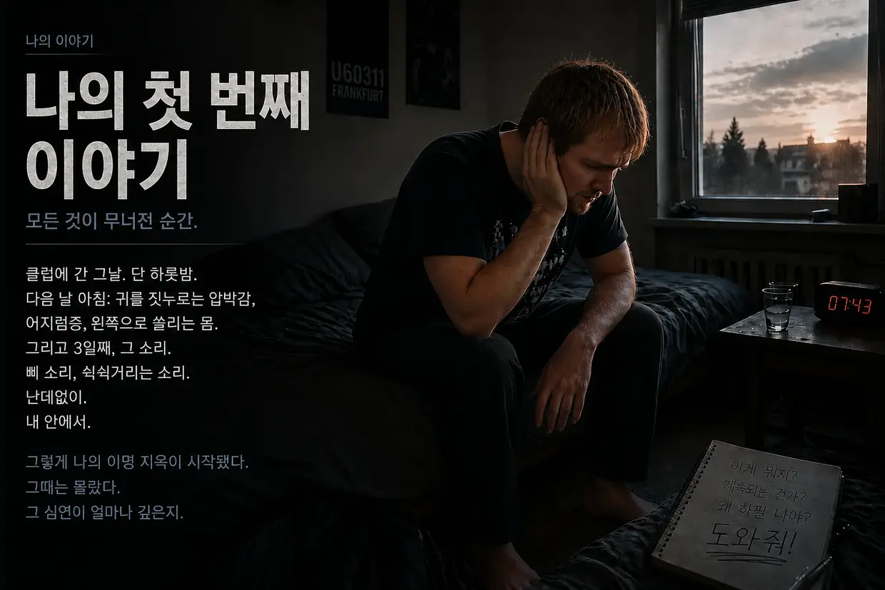
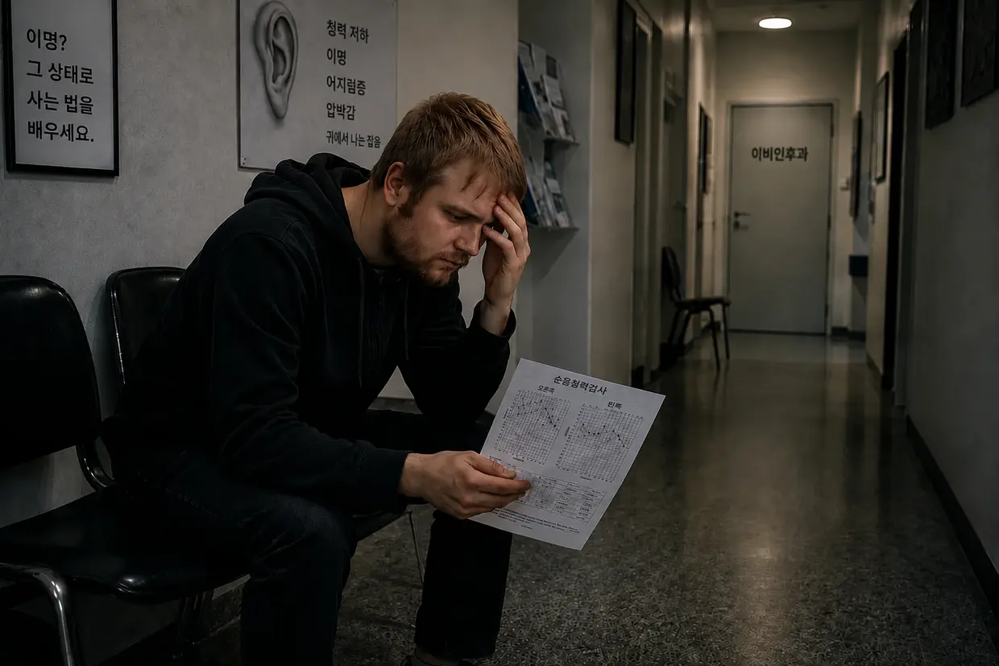
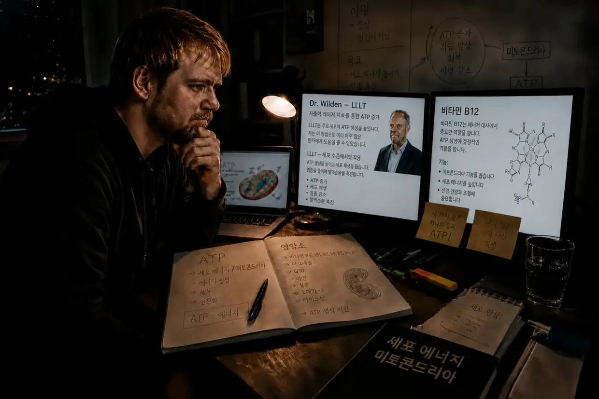
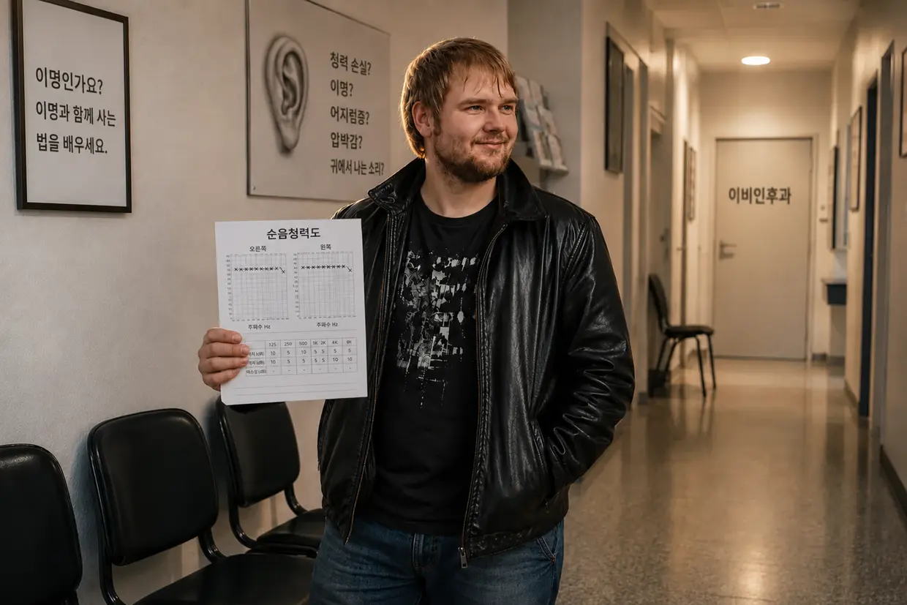

이명 지옥으로 향한 제 여정 – 1부: Die Höllenfahrt
안녕하세요, Dustin Müller입니다. 과거에 두 차례 이명을 겪은 사람으로서 이 사이트를 꼭 만들어야겠다는 절박한 마음이 들었습니다. 수년에 걸친 조사, 실제로 실행한 바이오해킹 프로토콜, 제 경험을 바탕으로 제가 개인적으로 어떻게 이명이 완전히 사라지는 지점에 이르렀는지 이명을 겪는 다른 분들에게 보여 주고 싶습니다. 하지만 그 메커니즘을 깊이 파고들기 전에, 이 모든 일이 제게 어떻게 시작됐는지부터 이야기해야 합니다. 그것은 의학적 우연이 아니라 정면충돌이었습니다.
짧은 버전을 찾으시나요? 이 긴 버전은 청력도와 이비인후과 진료, 하나하나의 돌파구까지 모든 세부 사항을 다룹니다. 더 간결하게 읽고 싶다면 짧은 이야기가 알맞습니다.
2011년 가을: 무적이라 믿었던 몸과 누적돼 있던 부담
스물셋이면 에너지가 끝없이 넘치고 몸이 무엇이든 버텨 낼 거라고 생각합니다. 저도 귀를 그런 식으로 다뤘습니다. 음악을 사랑했습니다. 수년 동안 방 문을 닫아도 부모님이 들을 수 있을 만큼 헤드폰으로 음악을 크게 들었습니다. 저도 모르는 사이 제 몸의 시스템은 이미 ‘푹 삶아진’ 상태였습니다.
모든 일은 제 사촌 때문에 시작됐습니다. 제가 제대로 된 디스코에 한 번도 가 본 적이 없으니 프랑크푸르트의 U60311에 같이 가자고 했습니다. 불길한 느낌이 들었지만 결국 따라가기로 했습니다. 계단을 내려갈 때부터 베이스가 몸을 얼마나 잔혹하게 때리는지 느껴졌습니다. 안에 들어간 저는 순진하게도 가장 좋은 자리라고 생각한 곳을 골랐습니다. 거대한 스피커 정면에서 약 10미터 떨어진 곳, 왼쪽 귀가 정확히 음원을 향하는 자리였습니다. 그것이 첫 번째 도미노를 쓰러뜨린 실수였습니다.
다음 날 아침: 기만적인 평온
등 뒤로 문이 닫히는 순간부터 귀에 엄청난 압박감이 느껴졌습니다. 왼쪽이 훨씬 심했습니다. 모든 소리가 물속에서처럼 먹먹하게 들렸습니다. 사촌은 정상적인 일이니 곧 사라질 거라고 했습니다. 술에 취해 있던 저는 그대로 침대에 쓰러졌습니다. 다음 날 아침 일어나려는 순간 곧바로 베개 위로 나가떨어졌습니다. 평형계가 망가져 몸이 기계적으로 왼쪽으로 심하게 끌렸습니다.
제 몸의 재생력을 거의 본능적으로 굳게 믿었기에, 저는 이 상황을 거의 농담처럼 받아들였습니다. 시간이 알아서 해결해 줄 거라고 생각했습니다. 실제로 그렇게 보였습니다. 2일째에는 왼쪽으로 쏠리는 느낌이 나아졌고 압박감도 거의 사라졌습니다. 안도의 숨을 내쉬며 위기를 넘겼다고 생각했습니다.
3일째: 괴물이 깨어나다
디스코에 다녀온 지 3일째였습니다. 잠에서 깼는데 갑자기 냉장고가 삐 소리를 내는 것 같은 소리가 들렸습니다. 대체 뭐야? 머리를 벽 가까이 대 봤습니다. 콘센트에 귀를 기울였습니다. 컴퓨터와 알람시계도 확인했습니다. 아무것도 없었습니다. 그러다 두 손으로 귀를 막았습니다.
이런 젠장. 내 안에서 나오는 소리야. 내 머릿속에 있어.
몇 분 동안 충격에 얼어붙어 서 있었습니다. 이게 뭐지? 이제 계속 이러는 건가? 왼쪽 귀에서는 웅웅거림과 쉭쉭거림, 사이렌, 큰 삐 소리가 났습니다. 오른쪽 귀에서도 이때 이미 희미한 삐 소리가 들렸습니다. 충격 속에서도 곧 다시 사라질 거라고 생각했습니다.
소프트웨어에 퍼진 독(14일의 시한)
인터넷을 검색한 지 몇 분 만에 답을 찾았습니다. 돌발성 난청과 내이 손상이었습니다. 청력 저하가 남고, 흔히 귀에서 소리가 난다고 했습니다. 그러다 제 피를 얼어붙게 만든 문장을 보았습니다. “14일 안에 치료해야 합니다. 그렇지 않으면 만성화돼 평생 안고 살아야 합니다.” tinnitus.de 포럼에서는 5년째 그 소리와 함께 사는 사람들의 글을 읽었습니다. 5년이라고? 이런 젠장. 신체적 결함이 거대한 심리적 위협으로 변했습니다.
흰 가운의 배신(첫 이비인후과 진료)

어릴 때부터 다니던 이비인후과 의사를 찾아갔습니다. 희망이 생겼습니다. 이제 곧 구원받을 거라고 생각했습니다. 디스코에 다녀온 일과 증상을 설명했습니다. 의사는 이미 조금 짜증이 난 듯 말했습니다. “네, 그 소리에 신경 쓰지 마세요. 음악을 좀 들어서 소리를 덮으세요.” 저는 다시 물었습니다. “하지만 14일 안에 치료해야 하는 것 아닌가요? 소리를 더 들려주는 게 정말 괜찮나요?” 의사는 “우선 청력검사부터 하죠”라고 말하고는 방을 나갔습니다. 믿음이 흔들리기 시작했습니다.
정적의 공포(청력검사)
방음 부스에 들어가고 나서야 청력 손상이 얼마나 심한지 깨달았습니다. 절대적인 정적 속에서는 소리를 자연스럽게 가려 주던 모든 것이 사라졌고, 왼쪽 귀의 소리는 믿을 수 없을 만큼 컸습니다. 검사는 세 부분으로 이루어졌습니다. 이명의 주파수와 음량 확인, 전반적인 청력 측정, 두개골을 통한 골전도 검사였습니다.
판결
검사 결과를 손에 든 의사는 제 청력이 영구적으로 손상됐고 할 수 있는 일이 없다고 설명했습니다. 충격을 받은 저는 나아질 가능성이 있느냐고 물었습니다. 의사는 다시 조금 짜증이 난 듯 말했습니다. “그 상태로 사는 법을 배워야 합니다. 신경 쓰지 말고, 다른 데 주의를 돌리고, 헤드폰을 쓰세요.” 제가 계속 디스코에 가도 되느냐는 터무니없는 질문을 하자 그는 “네, 문제없습니다”라고 답했습니다. 그리고 진료를 끝냈습니다.
맹세와 집으로 돌아가는 길
집으로 가는 길은 말 그대로 지옥이었습니다. 짓누르는 무게가 어마어마했습니다. 절망 속에서 잠시 이런 생각을 했습니다. 이걸 없애지 못하면 더는 살고 싶지 않다. 하지만 집에 도착하자 끝없이 깊던 슬픔이 갑자기 오기로 바뀌었습니다. 독일의 의사 중 아무도 이명이 무엇인지 모른다는 게 믿기지 않았습니다. 두 주먹을 꽉 쥐었습니다.
“이명이 사라지든지, 내가 사라지든지 둘 중 하나다. 이게 내 삶을 지배하도록 내버려 두지 않겠다. 내가 직접 무엇을 할 수 있는지 찾아봐야 한다.”
해결책이라는 무법지대

직접 공부하기 시작했고, 압도적으로 많은 ‘치료법’을 마주했습니다.
- 코르티손과 은행잎: 혈액순환을 돕고 염증을 억제하는 수단이니 청력 회복에 도움이 될 법해 보였습니다.
- 턱과 목(CMD/경추): 긴장이 소리를 유발한다는 이론이었습니다. 하지만 제 이명은 분명히 디스코의 베이스 때문에 생겼으므로 제 헛소리 감지기가 울렸습니다.
- TRT와 마스킹: 다른 소리로 이명을 덮는 방식입니다. 실제로 잠깐은 이명을 줄일 수 있었습니다. 하지만 소리를 끄면 이명은 더 사납고 크게 돌아왔습니다. (오늘날 제가 아는 것은 이렇습니다. 이미 에너지가 바닥난 유모세포는 새로운 소리가 들어올 때마다 일해야 하고, 원래 회복에 필요했던 마지막 ATP까지 써 버립니다.)
- 영양 보충제: 당시 저는 이런 사람들을 비웃었습니다. ‘참 멍청하네.’ 완전히 쓸모없다고 여긴 것에 돈까지 쓰고 있었으니까요. 훗날 바로 그 길, 즉 실제 세포 에너지와 ATP 생산, 알맞은 영양소를 통해 제 이명을 돌파하리라고는 꿈에도 생각하지 못했습니다.
두 번째 이비인후과 진료: 치명적인 조언
두 번째 이비인후과 예약 날 아침, 이명이 갑자기 엄청나게 심해졌습니다. 오른쪽 귀에 이미 있던 희미한 삐 소리도 이제 뚜렷하게 커졌습니다. (오늘날 제가 아는 것은 이렇습니다. 의사의 조언대로 음악을 듣고 밤에는 백색소음을 틀며 소리에 계속 노출된 탓에 제 세포들은 다시 무릎을 꿇었고, 오른쪽 귀에 이미 있던 소리가 더 커졌습니다.) 두 번째 이비인후과 의사는 친절하고 격려해 주는 사람이었습니다. 은행잎을 처방하고 충분한 수면과 운동을 권했습니다. 헤드폰을 물었더니 “주의를 돌리는 데 오히려 도움이 됩니다”라고 답했습니다. (오늘날 세포생물학의 관점에서 보면 절대적으로 치명적인 조언이었습니다.) 3개월 뒤 만성화되는 문제를 묻자 돌아온 말은 이것뿐이었습니다. “두고 봅시다… 보상하는 법, 다시 말해 완전히 의식에서 지우는 법을 배울 수도 있습니다.” 실제로 소리가 사라질 가능성을 배제하는 그 반쪽짜리 문장이 또다시 등장했습니다.
기만적인 쳇바퀴
그렇게 며칠, 몇 주가 흘렀습니다. 낮에는 학교 덕분에 주의를 돌릴 수 있었습니다. 저녁에는 기만적인 마스킹의 고리로 도망쳤습니다. 헤드폰으로 음악을 듣고 폭포 소리를 계속 틀었습니다. 잠깐은 견딜 만해졌습니다. 하지만 생물학적으로는 쳇바퀴를 돌고 있었습니다. 지친 귀를 소리로 둘러싸 끊임없는 스트레스 상태에 두었습니다. 제 세포들은 물리적 복구에 써야 할 마지막 ATP를 이 인공 소음을 처리하는 데 태워 버렸습니다. 순수한 생존 모드였습니다.
두 번째 붕괴: 청각과민증과 현훈의 공중제비
어느 날 아침, 왼쪽 귀에 갑자기 다시 엄청난 압박감이 생겼습니다. 무시하려고 애쓰며 학교로 향했습니다. 여전히 의사의 조언을 믿고 있었기에 가는 길에 치명적인 실수를 저질렀습니다. 자동차 라디오로 가장 좋아하는 노래를 아주 크게 틀었습니다. 그날 학교에서 무슨 일이 기다리고 있는지 알았다면 그 자리에서 차를 돌렸을 겁니다. 경고 신호는 이미 와 있었습니다. 하지만 그러지 않았습니다. 수업료를 냈으니 계속 갔습니다. (이 큰 음악 소리가 완전히 지쳐 있던 제 세포에 가해진 마지막 결정타였습니다.)
첫 수업 시간에 갑자기 심한 청각 왜곡과 정상적인 소리에도 통증을 느끼는 과민반응, 즉 청각과민증이 시작됐습니다. (오늘날 제가 아는 것은 이렇습니다. 귀의 ‘충격 흡수 장치’인 외유모세포가 마지막 ATP까지 써 버린 상태였습니다.) 그 뒤 몇 시간 동안 왼쪽 귀의 압박감은 갈수록 잔혹해졌습니다. 그리고 일이 터졌습니다. 시야 전체가 수직으로 돌기 시작했습니다. 머릿속에서 반 바퀴 공중제비를 도는 것 같았습니다. 세상이 거꾸로 뒤집혔습니다. 몇 초 뒤 시야는 정상으로 돌아왔습니다. 하지만 몸이 심하게 흔들리는 듯한 어지럼증과 왼쪽으로 크게 쏠리는 느낌, 왼쪽 귀에서 소리가 먹먹하게 들리는 증상은 남았습니다. (내이의 이온 정체가 너무 심해져 인접한 평형기관까지 침수된 상태였습니다.)
공포에 질린 채 버텨 보려 했습니다. 쉬는 시간이 되자마자 그곳을 빠져나왔습니다. 집으로 운전한 것은 무모한 일이었습니다. 극심한 어지럼증 때문에 몇 초마다 핸들을 반대로 꺾어야 했습니다. 그저 안전한 곳으로 가고 싶었습니다. 이 두 번째 붕괴는 결정적인 전환점이었습니다. 더는 그냥 버티며 넘길 수 없다.
세 번째와 네 번째 이비인후과: 답 대신 알약, ‘가상의 소리’라는 거짓말과 심리 꼬리표
그날 바로 세 번째 이비인후과에 응급 예약을 잡았습니다. 청력검사와 후각검사, 아무 변화도 일으키지 못한 ‘체위성 어지럼증’ 검사를 받았습니다. (오늘날에는 분명합니다. 떨어져 나온 이석이 아니라 내림프수종이었으니 고개를 움직여 봐야 아무 소용이 없었습니다.) 동료 의사 한 명은 “또 생긴 돌발성 난청이며 14일이면 나아집니다”라는 진단을 덧붙였습니다. 아니면 막힌 부비동 때문일 수도 있다고 했습니다. 순전히 증상만 놓고 한 추측이었습니다. 그러다 강펀치 같은 말이 나왔습니다. “많은 사람이 우울증에 빠집니다. 증상이 남으면 항우울제를 처방해 드릴 수 있어요.” 저는 앉아서 제 귀를 의심했습니다. 제 평형계가 무너졌는데 그들의 해법은… 향정신성 약물이라고? 저는 맹세했습니다. 절대 안 된다고.
네 번째 이비인후과, 이른바 ‘전문가’에게는 제 이야기를 전부 들려주었습니다. 세포 차원의 문제는 들여다보지 않은 채 차갑게 돌아온 말은 이것이었습니다. “인지행동치료에 대해 들어 보셨나요? 문제는 청력 문제에 지나치게 집중해서 그 때문에 이명을 계속 유지하고 있다는 겁니다.” 저는 맞섰습니다. “하지만 이 소리는 디스코에 다녀온 뒤 물리적으로 생긴 것 아닌가요?” 그는 전혀 반응하지 않았습니다. 코르티손을 묻자 “처음 14일 동안만 의미가 있습니다. 지금은 가상의 소리로 봐야 합니다”라고 했습니다. 마지막에는 다시 반대 소리를 쓰는 TRT를 권했습니다. 마스킹을 하면 제 이명이 더 사나워진다고 설명하자 제 설명을 잘라 버렸습니다. 시스템은 항복했고 제게 책임을 돌렸습니다.
절대적인 밑바닥: 고립과 시스템의 실패
돌발성 난청이 생긴 지 한 달 반 뒤, 악몽은 제 생일 파티에서 정점에 이르렀습니다. 청각과민증과 청각 왜곡 때문에 미칠 것 같았습니다. 제 이명이 너무 커서 다른 사람들이 하는 말을 완전히 덮어 버렸습니다. 기묘한 현상까지 생겼습니다. 글자마다 나는 소리가 전과 완전히 다르게 들렸습니다. ‘S’는 ‘F’처럼, ‘T’는 ‘D’처럼 들렸습니다. 더는 감각의 홍수를 견딜 수 없어 제 생일 파티를 중단하고 집으로 도망쳤습니다. 그 뒤 며칠 동안 어지럼증이 너무 심해져 간헐적으로 쓰러질 듯했습니다. 의학적으로 ‘메니에르병’ 양상에 해당하는 증상군이었습니다. 저는 완전히 고립되고 세상과 단절됐습니다. 삶에도, 제 머리가 이상하며 항우울제가 필요하다는 말만 주입한 의사들에게도 버림받았습니다.
첫 번째 결정적 계기: ‘가상의 소리’라는 거짓말에 대한 반증
하필 주말 늦은 시간, 감염으로 외이도염까지 생겼습니다. 어쩔 수 없이 프랑크푸르트 대학병원 응급실까지 몸을 끌고 갔습니다. 이비인후과 의사는 아주 작은 흡인기로 양쪽 외이도를 차례로 흡인했습니다. 바로 그 순간 결정적 계기가 찾아왔습니다. 왼쪽 귀에서 날카로운 소음이 휘몰아치자, 그와 동시에 그쪽 이명이 이 소음에 사납고 폭발적으로 반응하는 것을 느꼈습니다. 이어서 오른쪽 귀도 정확히 같았습니다.
제 몸으로 한 완벽한 A/B 테스트였습니다. 그 순간 제 머릿속에서 ‘전문가’의 주장이 산산이 무너졌습니다. 심리적인 가상의 소리가 해당 외이도에 가해진 순수한 기계적 소음 자극에 동시에 반응할 리는 없습니다! 제게 이 반응은 절대적인 증거였습니다. 문제의 발원지는 여전히 제 귀 깊숙한 곳에 있었습니다. 세포들은 그 소음에 즉시 살려 달라고 비명을 질렀습니다.
코르티손 주입과 거즈 붕대의 기적
이비인후과 의사는 돌발성 난청이 생긴 지 얼마나 됐느냐고 무심하게 물었습니다. 두 달이라고 답했습니다. 아직 마법 같은 3개월의 시한 안이니 코르티손을 시도해 볼 만하다고 했습니다. 저는 즉시 동의하고 병동에서 하룻밤을 보냈습니다. 병원 침대에서도 계속 조사하다가 한 이명 환자가 직접 만든 웹사이트를 찾았습니다. 그곳에서 읽은 내용은 세포생물학적으로 논리가 맞았습니다. 소음에 더 노출되면 이명이 극적으로 악화된다는 것이었습니다. 세포의 ATP 생산을 표적으로 삼아 자극한다는 Dr. Wilden의 저출력 레이저 치료 링크도 있었습니다. 흡인기에서 겪은 일과 100% 맞아떨어졌습니다.
3일 뒤 외이도염 때문에 양쪽 귀에 두꺼운 거즈 붕대를 댄 채 퇴원했습니다. 그 며칠 사이에 이미 알아챘습니다. 이명이 눈에 띄게 작아졌습니다! 처음에는 코르티손 덕분이라고 생각했습니다. 하지만 Dr. Wilden의 사이트에서 적극적으로 정적을 찾는 것이 얼마나 근본적으로 중요한지 읽는 순간 번개를 맞은 듯했습니다. 제 귀는 며칠 동안 거즈 붕대에 꽉 막혀 있었습니다! 보통 이비인후과 의사라면 이렇게까지 귀를 막아 두지 않았을 겁니다. 절대적인 정적이 무언가를 바꾼다는 증거를 뜻하지 않게 얻었습니다.

굉음, 역동성, 절대적인 정적의 프로토콜
며칠 뒤 또 하나의 중요한 사실을 깨달았습니다. 귀 바로 옆에서 작은 크림 병을 사용하던 중 갑자기 큰 굉음이 났습니다. 눈 깜짝할 사이 이명이 울부짖었습니다. 하지만 아주 짧은 시간 안에 다시 ‘평소’ 수준으로 돌아왔습니다. 분명해졌습니다. 제 이명은 ‘고정된’ 것이 아니라 극도로 역동적이었습니다! 소음에는 실시간으로 악화되는 반응을 보였고, 제가 정적을 철저히 확보하면 줄어들었습니다.
가차 없이 결단을 내렸습니다. 그때부터 가능한 한 많은 시간을 완전한 정적 속에서 보내기 시작했습니다. 음악과 영화, 친구들과의 만남은 일상에서 드문 ‘보상’으로 바뀌었습니다. 그마저도 헤드폰은 절대 쓰지 않고, 아주 작게, 아주 짧게만 허용했습니다.
정적 속의 6개월, 그리고 25%에서 멈춘 회복
실제로 이명은 달마다 줄어들었습니다. 돌이켜 보면 약 8개월 뒤 음량이 대략 4분의 1 줄었습니다. 물론 완전한 정적을 100% 완벽하게 지킬 수는 없었습니다. 꼭 필요한 왕복 200킬로미터의 자동차 이동만 해도 이명 음량을 다시 큰 수준으로 끌어올렸습니다. 사실상 일주일 동안 귀를 아낀 일이 ‘헛수고’가 됐습니다.
그러다 답답한 일이 벌어졌습니다. 약 20~25% 개선된 지점에서 회복이 갑자기 멈췄습니다. 대화도 피하고 늘 귀마개를 끼며 고립을 극단까지 밀어붙였습니다. 방에서 똑딱거리던 벽시계까지 치워 버렸습니다. 하지만 더는 아무 변화가 없었습니다. 0이었습니다.
환추 교정, CMD와 경추 — 막다른 길
턱과 경추, 이명의 관계를 다시 깊이 파고들어야겠다는 생각이 들었습니다. CMD(두개하악장애)를 알게 돼 치과에서 교합안정장치를 맞췄습니다. 정형외과 센터에서는 경추 증후군 진단을 받고 근력운동(Med X)을 처방받았습니다. 두 가지 모두 이를 악물고 해냈고, 동시에 계속 정적을 지켰습니다. 두 달 뒤 냉정한 현실과 마주했습니다. CMD와 경추 증상은 나아졌지만 이명에는 단 하나의 변화도 없었습니다.
마지막 지푸라기는 환추 교정이었습니다. 200킬로미터를 달려 하일프락티커(Heilpraktiker)를 찾아갔고, 그는 특수 장비와 손기술로 비뚤어진 환추를 다시 자리 잡게 했습니다. 몇 주가 지나도 이 역시 아무 효과가 없었습니다. 유일한 부산물은 그가 만성 위염을 위해 차전자피와 미네랄 점토 혼합물, 프로바이오틱스를 권했다는 점입니다. 그런데 실제로 거의 1년 동안 끈질기게 이어지던 위 점막 염증이 사라졌습니다. 인상적이었습니다. 통상 의료는 실패했지만 하일프락티커(Heilpraktiker)는 성과를 냈습니다.
비타민 B12 — 가장 중요한(우연한) 결정적 계기
당시 아버지는 다발신경병증을 앓고 있었습니다. 아버지의 주치의는 뚜렷한 비타민 B12 결핍을 진단하고 주사를 처방했습니다. 어느 저녁 아버지가 제 눈앞에서 B12 한 앰풀을 직접 주사한 뒤, 통증이 줄었고 다시 몸이 따뜻해지는 것 같다고 말했습니다. 이렇게 작은 빨간 앰풀이 그토록 신체적인 변화를 일으킨다고?
조사하면서 이런 내용을 읽었습니다. B12는 신경 비타민 그 자체였습니다. 채식주의자(저는 15세부터 채식했습니다!)와 만성 위염 환자(제 위염은 바로 얼마 전에 가라앉았습니다)는 결핍 위험이 특히 높았습니다. 주치의에게 혈액검사를 받았습니다. 결과는 정상 범위의 맨 아래, 실제 결핍 기준선 바로 위였습니다. 확인된 결핍은 아니었습니다. 그런데도 의사는 “아직 정상 범위입니다”라며 주사를 거부했습니다. 풀이 죽은 채 병원을 나왔습니다.
그날 저녁 아버지가 다음 B12 주사를 맞아야 했을 때 용기를 내 저도 한 대 놓아 달라고 했습니다. 중요합니다. 의사의 관리 없이 이것을 따라 하는 것은 분명히 권하지 않습니다. 놀랍게도 몇 분 뒤 혈액순환이 나아지는 느낌과 포근한 온기, 더 맑아진 머리를 느꼈습니다. 편안하게 잠자리에 들었습니다.
바로 다음 날 아침, 절대적인 기적이 일어났습니다. 잠에서 깬 지 몇 초 만에 즉시 알아챘습니다. 이명이 엄청나게 줄어 있었습니다! 25% 개선된 상태에서 갑자기 40%가 조금 넘는 개선으로 뛰었습니다. 믿을 수 없어 눈물이 날 것 같은 채 누워 있었습니다. 하루가 흐르면서 다시 악화되기는 했지만 예전 수준까지 돌아가지는 않았습니다. 그다음 날 아침에도 다시 40%였습니다.
Dr. Wilden의 사이트에는 그의 레이저가 세포의 ATP 생산을 표적으로 삼아 자극한다고 적혀 있었습니다. 그리고 B12는 바로 그 ATP 생산에 필수적이었습니다. 딱 맞아떨어졌습니다! 어쩌면 비싼 레이저는 필요 없을지도 몰랐습니다. 특정 영양소로 ATP를 높일 수 있겠다고 생각했습니다.
담도 산통과 레시틴의 기적(당시 제 미엘린 모델)
미국에서 주문한 고함량 종합비타민을 기다리던 중 다음 재앙이 덮쳤습니다. 담석으로 인한 담도 산통이었습니다. 야간 응급실에서 의사는 수술, 즉 담낭을 잘라 내는 방법만 제시했습니다. 저는 거부하고 위험을 감수한 채 집에 돌아갔습니다.
다시 인터넷을 조사했습니다. 한 당사자는 레시틴 과립을 몇 달 동안 먹은 뒤 담석이 완전히 녹았다고 했습니다. 바로 다음 날 레시틴을 구해 30그램을 먹었고, 실제로 오른쪽 윗배의 압박감이 가라앉는 것을 느꼈습니다. 중요합니다. 담석이 있다면 반드시 의사의 관리를 받으세요. 이것은 급박한 상황에서 제가 겪은 지극히 개인적인 경험일 뿐, 다른 사람을 위한 치료 조언이 아닙니다.
하지만 진짜 하이라이트는 3일 뒤 찾아왔습니다. B12 주사와 레시틴 과립을 함께 사용한 뒤 또 한 번 기적이 일어났습니다. 다음 날, 출발점보다 60~65% 개선돼 있었습니다! 몇 달 동안 정체된 끝에 일어난 변화였습니다. 저는 조사한 내용을 바탕으로 당시 이런 모델을 세웠습니다. 레시틴은 미엘린층, 즉 신경 절연층의 핵심 건축 재료였습니다. 연구에 따르면 소음으로 인한 이명에서는 바로 이 절연층이 “얇은 전선의 플라스틱 보호막이 파괴된 것처럼” 손상된다고 했습니다. 그리고 B12는 미엘린 수초 재생에 가장 중요한 비타민이라고 했습니다. 이런 세상에, ATP뿐 아니라 건축 재료도 필요했던 겁니다! 오늘날에는 이 메커니즘을 더 열린 시각으로 봅니다. 청신경이나 미엘린이 관여했을 가능성은 여전히 있다고 생각하지만 제 경우에 그것을 확실히 입증할 수는 없습니다. 간접적인 경로도 가능했습니다. 레시틴의 콜린이 아세틸콜린의 재료가 되고, 이를 통해 부교감신경과 깊은 수면, 재생을 도왔을 수도 있습니다. 아니면 레시틴이 여러 경로에서 동시에 세포 복구를 앞당겼을 수도 있습니다. 두 가지가 함께 작용했을지도 모릅니다.
80%까지 돌파하다(B군 복합체 우회로)
레시틴과 종합비타민, B12 주사 덕분에 회복은 진전됐습니다. 하지만 이명은 약 70% 개선된 지점에서 멈췄습니다. 다른 비타민 B군이 충분히 흡수되지 않는다고 의심했습니다. B1과 B2는 앰풀로, B3와 B5, B8은 고함량 정제로 구했습니다. 그리고 좋았어, 좋았어, 좋았어! 매주 이명이 더 줄었습니다. 디스코에 다녀온 지 16~17개월째에는 실제로 이명이 20%만 남았습니다. 다시 말해 80% 개선이었습니다. 하지만 또다시 멈췄습니다.
이명이 완전히 사라지기 전 마지막 단계: 세포 ‘융단폭격(Carpet Bombing)’
홀린 사람처럼 조사한 끝에 당시 이런 결론을 내렸습니다. B12와 레시틴만 생각한 것은 범위가 너무 좁았습니다. 제가 가정한 미엘린 복구와 다른 세포 구축 과정에는 오메가-3(DHA/EPA), 아미노산, 비타민 C, 지용성 비타민 A·D·E·K, 미네랄을 비롯한 수많은 영양소가 필요했습니다. 말 그대로 제 몸에 쏟아부었습니다. 주 2회 비타민 B군 주사, 주 3~4회 레시틴 30그램, 매일 아미노산 분말과 오메가-3 3그램, 고함량 비타민 C, Life Extension의 미네랄 혼합물, NOW Foods의 마그네슘과 아연, 매일 LaVita 한 잔, 여기에 Dr. Rath의 종합비타민 정제까지 먹었습니다. 분자교정의학적 ‘융단폭격’이었습니다.
페이드아웃과 악몽의 끝(이명 100% 사라짐)
완전한 영양소 스택을 시작하자 흐름이 결정적으로 달라졌습니다. 당시 제 모델에 따르면 이제 제 몸에는 ATP 에너지와 온갖 건축 재료가 모두 갖춰졌습니다. 수도승 모드까지 더해지자 마침내 제대로 작업할 수 있었습니다. 오늘날에는 더 나은 에너지 공급을 가장 중요한 지렛대로 봅니다. 영양소는 동시에 중요한 보조 인자와 건축 재료를 제공했고, 그 과정을 추가로 앞당겼을 수도 있습니다. 처음과 마찬가지로 아침에는 수면 덕분에 세포의 배터리가 가득 충전돼 가장 좋은 상태였습니다. 저녁에는 하루 동안 쌓인 피로 때문에 이명이 다시 커졌습니다. 하지만 정적은 하루 속으로 계속 더 깊이 파고들었습니다. 처음에는 정오까지 소리가 들리지 않았고, 그다음에는 오후까지 들리지 않았습니다. 저녁의 악화는 갈수록 약해지고 짧아졌습니다.
그러다 그 결정적인 아침이 왔습니다. 절대 잊지 못할 아침입니다. 잠에서 깨는 찰나 이미 느꼈습니다. 머릿속 느낌이 달랐습니다. 심장이 두근거렸습니다. 크리스마스를 맞은 아이처럼 들뜬 채 귀마개를 귀 깊숙이 밀어 넣었습니다. 귀를 기울였습니다… 아무것도 없었습니다.
조광 스위치는 0에 놓여 있었습니다. 아침에도, 낮에도, 저녁에도 아무것도 들리지 않았습니다. 거의 2년 동안 알지 못했던 자연스럽고 평화로운 정적뿐이었습니다. 이명은 없었습니다. 완전히 사라져 있었습니다.
그 느낌은 말로 표현할 수 없었습니다. 궁극적인 안도와 절대적인 만족감이 깊고 따뜻하게 차올랐습니다. 제가 이겼습니다. 포기하지 않았고, “그 상태로 사는 법을 배우세요”라고 했던 의사들에게 승리했으며, 결국 비싼 레이저조차 필요하지 않았습니다. 제 몸이 스스로 복구해 냈습니다. 결과는 현실이었습니다. 이명은 완전히 사라졌습니다. 당시에는 그 메커니즘을 이렇게 설명했습니다. 미엘린층이 회복됐고, 청각세포의 액틴 골격이 다시 섰으며, 접촉 불량이 해결됐고, 뇌가 비상 증폭기(Central Gain)를 껐다고 보았습니다. 오늘날에는 에너지 공급을 세포 재생의 가장 중요한 지렛대로 봅니다. 특히 유모세포와 그 스테레오실리아, 세포막에 초점을 맞춥니다. 미엘린이나 청신경이 관여했을 가능성은 여전히 있다고 생각하지만, 제 경우에 그것을 확실히 입증할 수는 없습니다. 생물학이 이겼습니다.
그날 아침에는 아직 몰랐습니다. 여러 달 뒤 또 다른 치명적인 연쇄반응으로 제 몸이 가장 심각한 상태의 CFS(만성피로증후군)로 추락하게 되리라는 것을 말입니다. 하지만 ‘고칠 수 없다’던 것조차 스스로 회복시킬 수 있다는 이 지식은 다음 지옥으로 가져갔습니다.
이 이야기는 여기서 끝나지 않습니다. 첫 승리 뒤에 온 일이 진짜 “Der Härtetest”였습니다. 제 생물학적 모델이 실제로 작동한다는 것을 의도적으로, 미친 방식으로 입증하는 일이었습니다.
